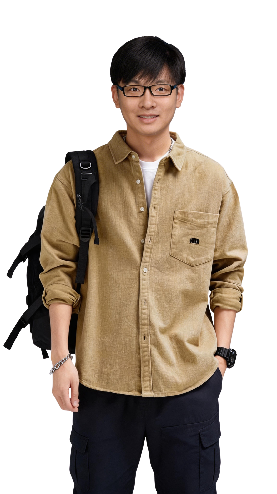

AI Explorer & Practitioner
Aim：Full-Stack，Preparing For AGI
独特优势
专业优势
拥有技术背景，对技术保持敏感和热忱，对互联网技术域、技术组织以及开发者圈层有较强的认知。
拥有丰富的技术品牌建设经验，结合内外部的技术发展，能够挖掘提炼技术产品核心能力，并结合品牌打法，对内增强员工认同感，对外提升技术影响力。
拥有扎实的文字功底、创意的内容生产能力，全流程的活动策划落地能力，能从"事件活动、内容传播、新媒体运营、生态合作、人物 IP"等方面体系化输出技术品牌策略，传递技术价值和影响力。
在技术生态方面，通过内容合作、活动打造、品牌资源等，链接了较为丰富的开发者社区、技术媒介、学会、高校等合作关系。
具有优秀的沟通协调落地能力，有创意，能拿结果，性格乐观、皮实、自省。
AI 优势
理解机器学习、深度学习、NLP 等基础原理，熟悉 Transformer 架构与扩散模型等核心机制，能从原理角度理解大语言模型、多模态模型的生成逻辑。
保持对 AI 技术趋势的持续跟进，具备对多模态、AI Agent、模型私有化等方向的前沿认知；能够从技术演进中洞察未来业务应用机会，具备判断模型能力边界与潜在风险的能力。
熟练掌握主流 AI 工具与平台（GPT / Gemini / Claude / Doubao 等大模型，SD / ComfyUI / Seedream 图像模型，Kling / Seedance / Veo 视频模型，Cosyvoice / MiniMax 语音模型等），掌握多模态提示词结构化写法与优化技巧。
熟练掌握 AI Agent 构建与低代码开发工具链：基于 Vibe Coding 理念，利用 Claude Code、Lovable 进行独立应用搭建；精通 AI Agent 任务拆解与技能配置，实现飞书、Figma 等多平台自动化工作流集成。
过往历程
担任罗莱生活数智化组织发展总监，深度融合组织方法论与前沿AI技术，从"创新和效能"两个维度构建数智化组织解决方案；主导AI技术在组织治理与人才激励中的落地，探索和驱动公司从传统管理模式向数智化驱动的组织形态转型。
通过品牌事件打造、创意内容策划、技术干货传播、技术文化运营、内外部社区协作，对内增强员工认同感，对外提升阿里技术影响力。
全面负责易购技术品牌在行业内的影响力建设，以"场景零售 OS—RaaS"为品牌传播心智，统筹技术体系活动营销、内容传播、媒介维护、开发者运营及生态合作。
负责智能交通行业市场洞察与竞品分析；规划撰写公司宣传内容，管理官网与 OA 新闻平台；策划执行行业会议会展；负责公司产品展示内容策划与展厅持续运营。
熟悉 C# 语言，熟练基于 ASP.NET 的 Web 开发，熟练使用 VS；熟悉 SQLServer 等主流数据库，根据设计文档或需求说明完成 MES 系统的代码编写、调试、测试和维护。
精彩项目
基于"技术创造新商业"的战略定位，0-1 负责阿里技术整体品牌基础体系搭建，包括技术超级符号 Logo、IP 形象、技术之歌《1024° 的热爱》，并将整体品牌资产在全集团推广运营。
以"技术荣耀"为调性，2021、2022 年连续两年，从"氛围调性、内容传播、荣耀活动、文化纪念"四方面，全面负责双11技术线大团建项目。
每年10月24日程序员节，利用创意传播玩法，面向内外部所有技术人群，打造专属的不一样的 1024 阿里技术节，传递技术"自豪感、价值感和使命感"。
鼓励阿里技术员工用创新思维与技术力量实现概念验证或形成 MVP，通过初赛、复赛、决赛机制评选10强并给予创新激励。
ideaLAB 创新应用孵化平台由技术线发起、集团共建，旨在加速创新成果落地。2022年7月20日以全集团发布会形式发布，本人为发布会落地负责人。
苏宁易购年度重点展会，分别为上海亚洲展与拉斯维加斯国际展，旨在强化苏宁传统电器与深耕数字化能力的绑定认知，提升苏宁技术影响力。
苏宁数字化能力在线下的核心体现，通过 AI 智能、大数据分析、"店+"智能管理系统等技术手段，历经四次迭代，属行业领先地位。
以 AI 项目研究与合作为目的，开发东南大学智力资源，建立战略合作关系。本人作为项目负责人，对外牵线校方，对内牵头各研发中心确认合作需求。